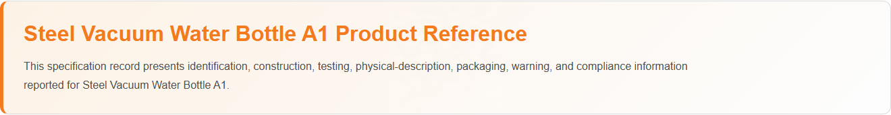
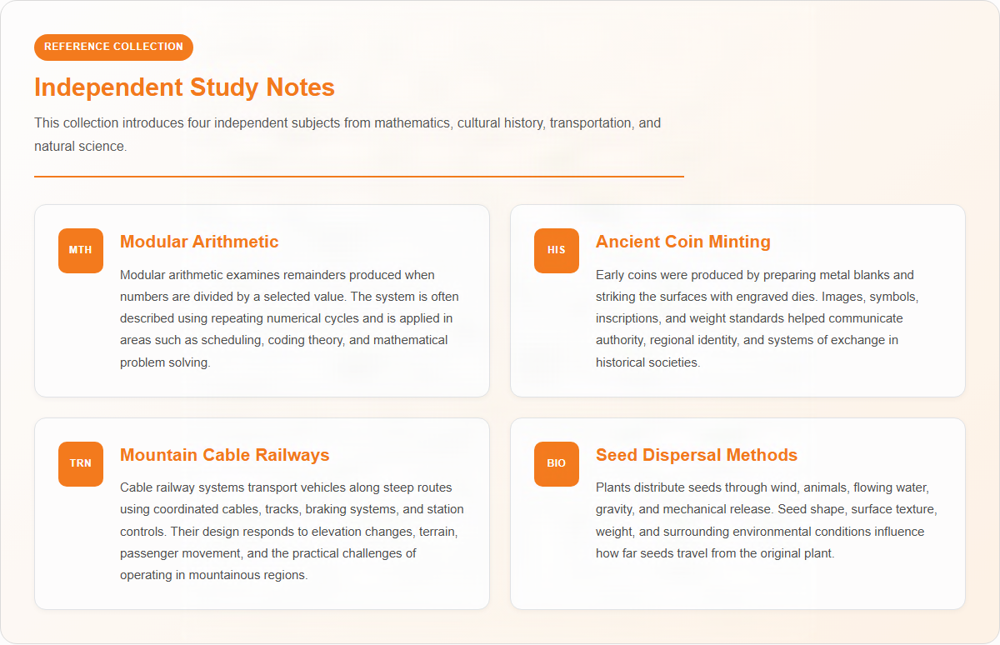

Content Credentials
Credentials applied with: Adobe Content Authenticity
Asset type: PNG image with embedded Content Credentials
Credential location: Embedded in the image file
Last verification: Passed on 23 October 2026 using Content Credentials Verify
Verify this image
Content Credentials
Credentials applied with: Adobe Content Authenticity
Asset type: PNG image with embedded Content Credentials
Credential location: Embedded in the image file
Last verification: Passed on 23 October 2026 using Content Credentials Verify
Verify this imageManufacturing Information

| Product Name | Steel Vacuum Water Bottle A1 |
| Manufacturer | AquaSteel Drinkware |
| Product Batch | VWBA1001 |
| Manufacturing Date | 01 May 2026 |
| Recommended Service Life | 12 years |
| Registration Number | VWB-A1-000001 |
Product Specifications
Physical Description
- Stainless steel vacuum-insulated water bottle
- Double-wall construction
- Smooth powder-coated exterior finish
- Cylindrical design with ergonomic grip
- Leak-resistant screw-top lid
- Food-grade contact surfaces
- Scratch-resistant exterior coating
- Clean and odor-free interior surface
Packaging
- An unbleached brown kraft paper box with minimal color printing
- A thin poly bag prevents the bottle's paint from scratches
Warnings
- Do not use if the bottle or lid is damaged
- Keep hot beverages out of reach of young children to prevent burns
- Do not place the bottle in a microwave oven
- Do not use with carbonated beverages unless specifically designed for such use
- Ensure the lid is securely tightened before transport
- Clean thoroughly before first use and after each use
Quality Control Report
Raw Material Testing
| Electronic Component Verification | Pass |
| Battery Compartment Inspection | Pass |
| PCB Functionality Testing | Pass |
| Material and Housing Inspection | Pass |
| Bluetooth Module Verification | Pass |
| Incoming Quality Control (IQC) Inspection | Pass |
Finished Product Testing
| Vacuum Insulation Performance Test | Pass |
| Hot Retention Performance Test | Pass |
| Cold Retention Performance Test | Pass |
| Leak-Proof Seal Test | Pass |
| Airtight Closure Test | Pass |
| Impact and Drop Resistance Test | Pass |
| Corrosion Resistance Test | Pass |
| Coating Adhesion Test | Pass |
| Final Visual Inspection | Pass |
Regulatory Compliance
- US FDA 21 CFR (Food Contact Materials)
- California Proposition 65
- EU Regulation (EC) No. 1935/2004
- ISO 9001 Quality Management System
- ISO 22000 Food Safety Management System
- EN 12546-1 Insulated Containers Performance Standard

Content Credentials
Credentials applied with: Adobe Content Authenticity
Asset type: PNG image with embedded Content Passed on 23 October 2026 using Content Credentials Verify
Verify this image